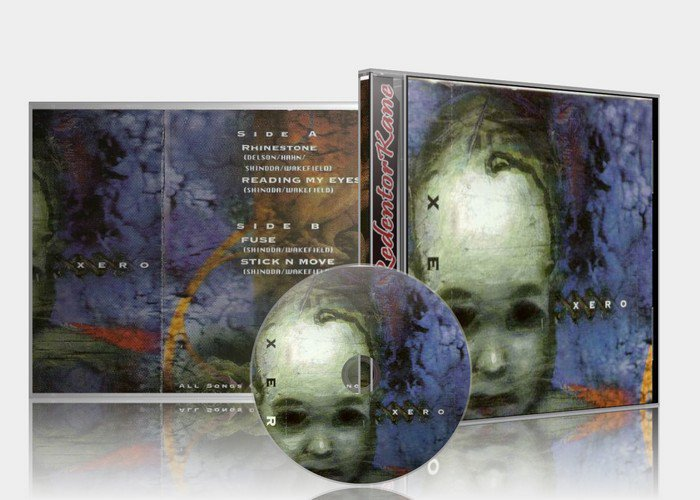

Members
Biography
Linkin Park
Shinoda's band brought in second vocalist Chester Bennington, replacing Mark Wakefield. From the onset, Shinoda was closely involved in the technical aspects of the band's recordings, and over the subsequent releases that role continued to expand. Shinoda, with guitarist Brad Delson, engineered and produced the band's Hybrid Theory EP, and performed similar roles in the recording of the Hybrid Theory album. Mike executively organized and oversaw the band's remix album Reanimation (2002), contributing his own production remixes that he made in his home studio for "Crawling" and "Pushing Me Away." In his spare time, he produced and performed on a song by The X-Ecutioners entitled "It's Goin' Down
Personal life
Mike Shinoda has been married to Anna (Hillinger) Shinoda since May 2003. They have a
son named Otis Akio Shinoda. Anna is now a children's author. The song Where'd You Go,
according to Shinoda, was dedicated to his wife, Anna The Making of The Rising Tied DVD
The couple currently resides in Agoura Hills, California. In 2004 he found his way on an
episode of Punk'd in which a fire hydrant was placed next to his car during a pretend
fire.[1] He has also revealed that he has asthma.[2]
Shinoda wears eye contacts.
Trivia
- Mike recieved the nickname "The Glue" by someone in the band who said that he “held everything together.” Other nicknames include Spike Minoda and Cobra Holda.
- He has played PRS, Ibanez, Fender, and Gibson guitars.
- He scored the MTV VMAs in 2005. Lil’ Jon also contributed, but they did not collaborate–their tracks were separate.
- He was an honorary parade marshal in Los Angeles Nisei Week, 2005.
- He was awarded the Japanese American National Museum’s Award of Excellence in 2006.
- Brad and Mike wrote and assembled the song and performance for their one-time-only mashup of “Numb / Encore / Yesterday” on stage at the Grammys (2006) with Jay-Z and Paul McCartney, which was an homage to Danger Mouse’s “Grey Album.” They also won “Best Rap Sung Collaboration” the same night. As they walked up to the podium, Jay motioned for Mike to give the acceptance speech, which he did. We think Jay wanted him to accept because he had assembled, produced, and mixed all the mashups on Collision Course.
- In 2009, Mike received an Honorary Doctorate Of Humane Letters (H.D.L) from Art Center College Of Design. That's why his name at the top of the page his: Michael Kenji “Mike” Shinoda, H.D.L.
- EWP honored him with a Visionary Award and dinner in 2010.
- His father is Japanese while his mother is Russian. He has a younger brother named Jason. He studied graphic design and illustration at the private school Art Center School in Pasadena, California.
Biography
Delson graduated from Agoura High School in 1995 and formed Xero with Mike Shinoda whom he knew since the seventh grade, which would later become Linkin Park. He graduated from the University of California, Los Angeles with a degree in communications, but decided to forgo law school to pursue a career with Linkin Park.
While in college, (he shared a college room with Dave Farrell) Delson had to intern with a member of the music industry as a part of his career. He ended up working for Jeff Blue, an A&R representative at Warner Bros. Records. He told Blue about his band and in return for giving him demos to listen to he was offered constructive criticism. Blue is the man who found Linkin Park's current lead vocalist, Chester Bennington.
He also used to work as a bouncer at the Roxy, as confirmed by the breakfast with Linkin Park hosted by Kevin and Bean, which can be heard KROQ.com.
Before forming Xero with Mark Wakefield, Delson's first instrument was the clarinet. His first band was called the Pricks, and he later played in a band called Relative Degree with his fellow Linkin Park bandmate Rob Bourdon. He met and roomed with bandmate Dave Farrell, better known as Phoenix, at UCLA.
Delson can usually be seen wearing a very large pair of headphones on stage. The headphones are designed by Shinoda and himself and change with every Linkin Park release. Delson has alluded to an exact reason for them, but he has admitted it channels him into his own personal "matrix" while performing. He won't divulge to what this "matrix" is in detail. Delson usually does not give a serious answer as to why he wears the headphones, with answers such as "If I tell you, I'll have to have sex with you." In a recent interview, Mike Shinoda said that Brad wears shooting range headphones for hearing protection. Then he gives them to Mike who then makes sticker designs which go on them.
Delson has been known for his anti-social behavior on occasions. In high school, he used to dye his hair a variety of colors and in earlier days of the band he generally kept it shaved. Recently, Delson has been seen sporting an Afro, which is also seen on the front cover for Minutes to Midnight.
Personal life
Delson is of jewish faith.
Married to Elisa Delson. They married on September 16,2003, in a private ceremony. She
was born in 1979, maiden name Elisa Sara Boren. She works as a scripter (Everwood).
Philanthropy
In 2005, Brad signed on as an official supporter of Little Kids Rock, a nonprofit organization that provides free musical instruments and free lessons to children in public schools throughout the United States. Brad has personally delivered instruments to children in the program and sits on the organization's board of directors as an honorary member.
Biography
Farrell was born in Plymouth, Massachusetts but later moved to Mission Viejo, California when he was five. He attended Mission Viejo High School. He also graduated from the University of California, Los Angeles, in 1999. He is adept at playing the bass guitar, electric guitar, cello and violin. He has also been known to play an upright bass at some concerts.
Farrell was a member of a Christian ska/Christian punk band known as Tasty Snax. While attending college, he would practice with Brad Delson in their dorm room together. However, because he had to play and tour with the Tasty Snax, he could not play with Brad Delson and his band, which would become Linkin Park . After changing their name to Snax, Farrell began playing bass guitar in the band before leaving once again to join Linkin Park full-time to play bass. Farrell's fellow band mate Mark Fiore became Linkin Park's videographer. As described in the inlay for Reanimation he uses an Ernie Ball MusicMan Bass.
Farrell has cited his influences as being his mother and his brother, Joe, as well as Weezer, The Beatles, the Deftones, The Roots, Bob Marley, Sarah McLachlan, Hughes & Wagner and Harrod & Funck.
Personal life
He has been married to Linsey Farrell since December 28, 2002, and, in 2007, he became a
father. He has two brothers, his older brother, Joe, and his younger brother, Tyler.
Dave has three children. Regan twas born March 29, 2007 and a second daughter born late
December 2008.
Trivia
- Fitting to his nickname, Phoenix, he has two phoenix tattoos on his back.
- On the 'Making of Minutes to Midnight' Dave Farrell is seen using Fender Precision Basses.
- Phoenix is rumored to be dabbling in the culinary arts. He is currently doing a tri-tip internship under master barbecuer Jason Felix.
- He does the backing vocals live to the song "The Little Things Give You Away"
- In addition to Mike and Chester's vocals, Phoenix also provides backing vocals for the song "Hands Held High" when performed live.
Joe Hahn
Biography
Linkin Park
Hahn joined Linkin Park, after meeting fellow band mate Mike Shinoda in art school, when the band was called Xero in 1996 as the band's turntablist. Since then, he has directed music videos for Linkin Park, with the exceptions of "One Step Closer", "Crawling", "Faint", and "Given Up". However, he came up with the idea for "One Step Closer" and collaborated with Mark Fiore and fellow band members to direct "Given Up". He is referenced to as Mr. Hahn at the beginning of "Cure for the Itch" from Hybrid Theory as well as in "High Voltage" from Hybrid Theory EP and "Kyur4 TH Ich" from Reanimation. He has also remixed the band's songs "With You" and "Cure for the Itch" (originally on "Hybrid Theory"), which appear on the remix album Reanimation as "Wth>You" and "Kyur4 Th Ich".
On the 2007 album Minutes to Midnight, Joe Hahn focused his contributions on programming with his sound effects board and MIDI keyboard. Minutes To Midnight also features his turntable talents on five tracks: "What I've Done", "Wake", "Valentine's Day", " The Little Things Give You Away", and "In Pieces." Joe has been known to utilize MIDI pads on several tracks from the band. Examples include "Crawling", "Numb", and "Points of Authority".
Personal life
Hahn is of Korean descent. He married Karen Benedit in February 2005 after dating her since 2003. Joe filed for divorce from Karen earlier in 2009. Hahn attended the accredited Art Center College of Design in Pasadena, California, but he didn't graduate in order to put his efforts into the band. Hahn is known for his dry sense of humor and wit in most interviews. Hahn is also a Transformers fan—on various occasions he has worn clothing or used turntables with Decepticon symbols on them. He was also the one to advise the band to put the single "What I've Done" on the soundtrack for the Transformers live action movie. Hahn, along with Rob and Chester, were present at the Transformers movie premiere.
Other projects
Hahn was featured on the Fort Minor songs "Slip Out the Back" and "Move On" (a Fort Minor Militia exclusive), tracks produced and sung by his Linkin Park bandmate Mike Shinoda. In both tracks, Hahn does some scratching in the outro. He also remixed the single "Where'd You Go", which he named "Where'd You Joe". He was also featured as a turntablist in the track "It's Goin' Down" by the The X-Ecutioners. Hahn's Linkin Park bandmates Mike Shinoda, Dave Farrell, Rob Bourdon and Static-X lead-singer Wayne Static also made an appearance in the song's music video.
Hahn has also managed to be featured on Good Charlotte's new compilation album Greatest Remixes on the track "The Young & the Hopeless".
As a proficient music video director, Joe has not only directed videos for his band Linkin Park, but he has also directed videos for Static-X, Story of the Year, Xzibit, X-Ecutioners, and Alkaline Trio. Hahn has also done some special effects for the TV show The X-Files.
In 2005 to 2006, while bandmates Chester Bennington and Mike Shinoda were busy with side projects, Hahn shot a short film called The Seed in Los Angeles, California, released in March 2008 and premiered at the Pusan International Film Festival. Hahn also appeared with a minor role in a short film by Filip Engström called Little Pony. In 2005, Hahn opened a retail concept store and brand Suru, located on the famous Melrose Avenue in Los Angeles.
Biography
Robert Gregory Bourdon (born January 20, 1979) is the drummer and youngest member of the rock band Linkin Park.
Rob was born in Calabasas, California and now lives in Los Angeles. He grew up in the same town as the members of (band) Incubus and Hoobastank.
Rob started to play Drums after watching an Aerosmith concert. His mother, Patty, is friends with Joey Kramer, Aerosmith's drummer. They also dated when the were much younger. This friendship meant they were able to go backstage and see the entire production. Kramer also gave Rob a kick pedal.
In his early teen years, Bourdon played in a few bands with his friends. It was around that time that he met his current Linkin Park bandmate, Brad Delson, and they played together for about a year in a band called Relative Degree. Their goal was to play at the Roxy Theatre, after achieving their goal with a sell-out show, Relative Degree eventually broke up.
Personal life
He once dated actress Shiri Appleby. He dated actress Vanessa Lee Evigan, starting in 2001 but has been single since at least early 2008.
His birthday was featured on an episode of iTunes' LPTV. On January 20, 2004, Linkin Park played a show in Philadelphia, Pennsylvania and the band can be seen joking around backstage and saying that it is Rob's twentieth. Rob is actively of the Jewish faith and follows a vegan diet.
Trivia
- Rob's favorite songs to play are "In the End", "Tinfoil" and "The Little Things Give You Away". He also mentions "Somewhere I Belong" as his favorite and "No More Sorrow" his second favorite on the Linkin Park Facebook Q&A.
- He is the tallest member of the band, standing at 6'4" and the youngest.
- Bourdon wears Puma racing shoes to get a better feel for the drum pedals; he says it gives him better control of the pedals. He is said to be somewhat of a perfectionist. Rob's hobbies include playing the piano (although he has never done so for a Linkin Park recording) and surfing.
- He also said that the song "Easier to Run" was the most difficult to play as he had to approach the drums very differently.
- In Linkin Park's third studio album, Minutes to Midnight, Rob has used standard acoustic drums, in addition/comparison to triggers which were used in the previous albums. Photos of the drum machines to be used for the record have surfaced via Joe Hahn's personal SlamXHype blog.
- In live performances of "Bleed It Out" Rob regularly plays a 'Jungle' complex drum solo, in one instance he broke the tip off his right drumstick around ten seconds in, but continued to play as breaking the tip doesn't actually impair his performance but more the sound.
Former members

Chester Charles Bennington (March 20, 1976 – July 20, 2017) was an American musician, singer-songwriter, actor, and multi-instrumentalist. He was the lead vocalist in the alternative rock band Linkin Park, and was previously associated with the band Grey Daze, among others. He had released seven studio albums with Linkin Park and one studio album with his side project Dead by Sunrise.
Bennington's first release with Linkin Park, Hybrid Theory, was a commercial success, and he has released several major albums and singles since then. He has worked with Jay-Z, Jonathan Davis, Young Buck, Slash, Julien-K, Busta Rhymes, Steve Aoki, Stormzy and Aaron Lewis[citation needed]. In 2007, Bennington was placed at 46th on Hit Paraders list of "Heavy Metal's All-Time Top 100 Vocalists". In 2017 he went from Heavy Metal to Pop.
Biography
Early Years
Bennington was born in Phoenix, Arizona, and this is where he first met Christy Morris. He took interest in music at a young age, citing Depeche Mode and Stone Temple Pilots as early inspirations. Bennington's parents separated in the late 1980s. He later struggled with cocaine and methamphetamine addictions. Bennington eventually overcame his drug addiction, and would go on to denounce drug use in future interviews. He worked at a Burger King restaurant before starting his career as a professional musician.
Before joining Linkin Park, Bennington was a vocalist in Grey Daze, a post-grunge band from Phoenix, Arizona. He left Grey Daze in 1998, but struggled to find another band to play in. After nearly quitting his musical career altogether, Jeff Blue, then the vice president of A&R at Zomba Music in Los Angeles, offered Bennington an audition with the future members of Linkin Park. Bennington quit his day job, and took his family to California, where he had a successful audition with Linkin Park, who were then called "Xero". Bennington and Mike Shinoda, the band’s other vocalist, made significant progress together, but failed to find a record deal. After facing numerous rejections, Jeff Blue, now a vice president of A&R at Warner Bros., intervened again to help the band sign with Warner Bros. Records.
Linkin Park
On October 24, 2000 Linkin Park released their debut album, Hybrid Theory, through Warner Bros. Records. Bennington and Shinoda wrote the lyrics to Hybrid Theory based on some early material.
Hybrid Theory was released in the United States on October 24, 2000 following the debut of "One Step Closer" on the radio. It entered the U.S. Billboard 200 charts at #16 in late 2000, and was certified gold by the RIAA five weeks after its release. In 2001, Hybrid Theory sold 4.8 million copies in the United States, making it the best-selling album of the year, and it was estimated that the album continued selling 100, 000 copies per week in early 2002. Throughout the following years, the album continued to sell at a fast pace and was certified diamond by the RIAA in 2005 for selling 10 million copies in the U.S.[13] It has sold 29 million copies worldwide as of 2009, which makes it the band's best-selling album and the best-selling debut album of the 21st century.
The follow up to Hybrid Theory would ultimately become Meteora. The band began to work on new material amidst their saturated schedule, spending a sliver of their free time in their tour bus' studio. The band officially announced the production of a new studio album in December 2002, revealing their new work was inspired by the rocky region of Meteora in Greece, where numerous monasteries have been built on top of the rocks. Meteora featured a mixture of the band's previous nu metal and rapcore styles with newer innovative effects, including the induction of a shakuhachi (a Japanese flute made of bamboo) and other instruments. Linkin Park's second album debuted on March 25, 2003, and instantly earned worldwide recognition, going to #1 in the US and UK, and #2 in Australia.
Linkin Park returned to the recording studios in 2006 to work on new material. To produce the album, the band chose producer, Rick Rubin. Despite initially stating the album would debut sometime in 2006, the album was delayed until 2007. The band had recorded thirty to fifty songs in August 2006, when Shinoda stated the album was halfway completed.Bennington later added that the new album would stray away from their previous nu metal sound.Warner Bros. Records officially announced that the band’s third studio album, entitled Minutes to Midnight, would be released on May 15, 2007, in the United States. After spending fourteen months working on the album, the band opted to further refine their album by removing five of the original seventeen tracks. The album’s title, a reference to the Doomsday Clock, foreshadowed the band's new lyrical themes. Minutes to Midnight sold over 600,000 copies in its first week, making it one of the most successful debut week albums in recent years. The album also took the top spot on the Billboard Charts.
In an interview with Q101's Kevin Manno at the 2008 MTV Video Music Awards, Bennington stated Linkin Park will be returning to the studio sometime in November to begin recording for their next album. This album, A Thousand Suns, was released in September 2010. Seen by many as a radical departure from the nu metal genre the band became known for, much of the album has an experimental quality to it. Later on the band released LIVING THINGS their 5th album. After LIVING THINGS the band went back to their roots with “The Hunting Party” which did much better than LIVING THINGS. After that their last album One More Light was released.
Personal life
After the arrival of his first child in 2002, Bennington took a short hiatus from Linkin Park in order to spend time with his wife and son. Chester was married to Talinda Bentley, a former Playboy model.
Chester had two children with Elka Brand, Jamie M. born May 12, 1996, and Isaiah D. born November 1998 and adopted by Chester in 2006. He has one child with Samantha, Draven Sebastian born April 19, 2002, and three children with Talinda. Tyler Lee, born March 16, 2006, and Lila and Lily born in 2011.
Bennington's parents divorced when he was 11 years old, and his father gained custody of him. After the divorce, Bennington started abusing marijuana, alcohol, opium, cocaine, methamphetamine, and LSD. At the age of 17, Bennington moved in with his mother, and was banned from leaving the house when his mother discovered his drug activity.
He was physically bullied in high school. In an interview, he said, "I was knocked around like a rag doll at school, for being skinny and looking different.
Bennington revealed that he had suffered sexual abuse from an older male friend when he was seven years old. He was afraid to ask for help because he did not want people to think he was gay or lying, and the abuse continued until the age of 13. The abuse and situation at home affected him so much that he felt the urge to kill people and run away. To comfort himself, he drew pictures and wrote poetry and songs. He later revealed the abuser's identity to his father, but chose not to continue the case after he realised the abuser was a victim himself
Health
Despite having prodigious success in the early 2000s, Bennington had medical issues outside of the limelight. He suffered a severe bite from a recluse spider while touring with the OzzFest in 2001. Bennington was plagued with poor health during the making of Meteora, and struggled to attend some of the album’s recording sessions. He fell ill during the summer of 2003, and eventually underwent surgery. Bennington sustained a wrist injury in October 2007 while attempting to jump off a platform during a show in Melbourne, Australia. Despite the injury, he continued to perform, and went to the emergency room after the show. Recently, he sustained a back injury while slipping a plate in his back while playing with his kids. His doctor has confirmed that he was no longer able to jump off platforms during shows.
Death
On July 20, 2017, Chester was found dead at his home by suicide by hanging. His death
was on the same day as what would have been his late friend, Chris Cornell's 53rd
birthday. Chris Cornell had also died of hanging himself two months prior. Everyone was
in shock when this happened. On October 27th Linkin Park and other artists joined
together at the Hollywood Bowl live-streaming a concert “celebrating“ Chester’s life. To
this day almost no activity has come from any of the band members except, Mike Shinoda
who released a EP entitled “Post Traumatic EP”
Chester will be forever missed by friends, family, and fans.
Solo Work
Chester Bennington teamed up with original Orgy guitarists Ryan Shuck and Amir Derakh, who perform together as Julien-K, for a solo project. Chester's band is called Dead By Sunrise, formerly known as Snow White Tan. Dead By Sunrise released their debut album in 2009. The album is called Out of Ashes. "Both bands are the same. The one where Chester sings and writes is Dead By Sunrise, but when I sing, and Amir and I are the primary writers, it becomes Julien-K and it's more electro and much darker...Julien-K and Dead by Sunrise are basically a creative collective, we're sort of a Warhol-style factory in that sense," explains Ryan Shuck. "Dead by Sunrise is Chester's Julien-K if that makes any sense."
He has also played minor roles in the movies Crank and Crank: High Voltage and sang for a couple of gigs with "Camp Freddy".
Bennington have also appeared in the seventh installment of the 'Saw' in which he played 'Evan' a racist, his association with the film wasn't revealed until the debut of the teaser trailer which began appearing online July 23rd.
Mark Wakefield is the manager for the band Taproot, and is the former singer of Xero, the band that eventually became Linkin Park. He met Mike Shinoda in high school and joined the band, who were at that point called SuperXero. They revised the name to Xero and recorded the self-titled Xero sampler tape /their first EP featuring the songs, "Fuse", "Reading My Eyes", "Stick N' Move" and "Rhinestone".
Before quitting the band Mark and the rest of Xero are known to have played at least one concert as an opening act for Cypress Hill. The lack of success and stalemate in progress prompted Wakefield, at that time the band’s vocalist, to leave the band in search of other projects. Chester Bennington had replaced him until his untimely death by suicide by hanging on July 20, 2017.
Wakefield has since recorded a song named "Ground Xero" in 1999.
Although Wakefield left Xero, he co wrote some songs from Linkin Park's debut album, Hybrid Theory including "Crawling", "Runaway", "A Place for My Head" and "Forgotten".
He is also responsible for the cover art for System of a Down's album Toxicity.